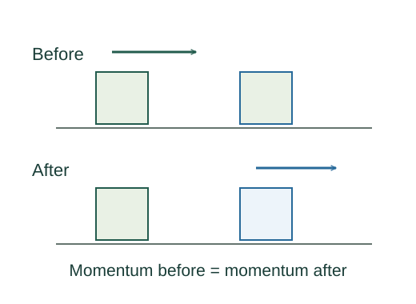

Derive one-dimensional elastic collision velocities
An isolated elastic collision conserves total momentum and total kinetic energy.
What the symbols mean
u₁,u₂: initial velocities; v₁,v₂: final velocities; m₁,m₂: positive masses, with all velocities signed on one axis.
When this applies
Isolated two-body collision, conserved kinetic energy, and a nontrivial collision rather than unchanged velocities.
Developing the argument

Conserve the two quantities
An isolated elastic collision conserves total momentum and total kinetic energy.
Factor differences of squares
Rearrange each conservation equation so the change of body 1 balances the change of body 2. Divide the energy equation by the momentum equation when the exchange is nonzero.
Reverse relative velocity
The previous equation means approach and separation have equal speed in the relative coordinate.
Solve the two linear equations
Substitute v₂ = v₁ + u₁ − u₂ in momentum conservation and isolate v₁; then recover v₂. Setting u₂ = 0 gives the textbook stationary-target formulas.
A worked example
Equal masses with the second initially at rest exchange velocities: v₁ = 0 and v₂ = u₁.
Derivation behind this calculation ↗A point to keep straight
For an inelastic collision, momentum conservation alone does not determine both final velocities; another condition is needed.
Check the assumptions and derivation ↗